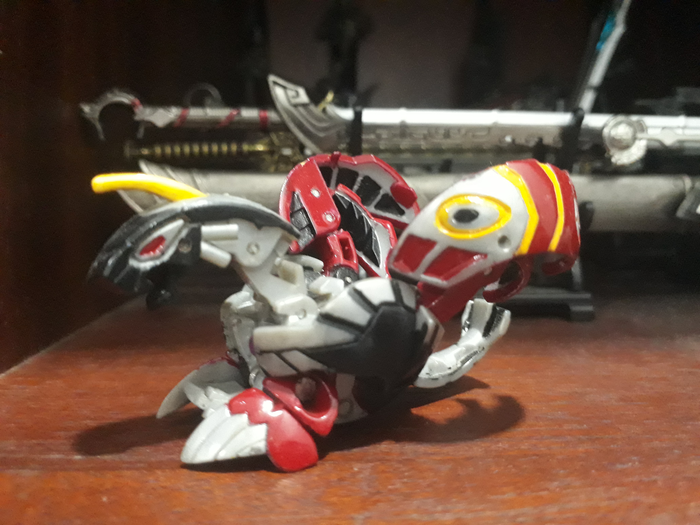

Đôi chút về bản thân
Bảo là giới thiệu đôi chút thế thôi chứ cũng không biết giới thiệu cái gì mà do thầy biểu làm nên ghi cho nó dài ra tí thôi.Á hì hi
Trước tiên xin tự giới thiệu họ tên đầy đủ mình là: Trương Công Hùng, sinh ngày 22/10/1998 (năm con tiger).
Hong biết sinh năm con Tiger thế nào mà không giống con cọp lại trông như con mèo nhà... ăn rồi ngủ thôi. nhưng tất nhiên không phải lúc nào cũng ăn với ngủ, mèo cũng có lúc bỏ nhà đi chứ, nên là ngoài ăn và ngủ ra thì còn có sở thích đi chơi, du lịch đây đó.... hoặc ít nhất là ngồi caffee hay net tám chuyện chơi game với bạn bè.
Nói chung là vậy đó, một người con trai chuẩn mực không hề tệ nạn hút chích mà đến giờ vẫn chưa ai thèm hốt đi hộ (trừ mấy anh giao thông... em cần một cô gái mà mấy anh)
Tiểu Sử ăn học... và một chút chơi
cóa thế nói là bao giờ cũng là con người ta trong mắt phụ huynh (nhưng phụ huynh của thằng bạn)còn phụ huynh mình thì... ờ thì: mày nhìn con người ta kìa... mà thề là không biết nó là ai trong cái xóm này luôn đấy
Tuy hay bị la rày nhưng vẫn rất tự hào là mình học cực kỳ bình thường, cứ thế đều đều mà lên lớp, tốt nghiệp, qua môn, lọt vào top 10 tỷ người học giỏi nhất thế giới... và rồi một ngày nọ đột nhiên cái chế độ ăn chơi nó được kích hoạt.
Chuyện gì đến cũng sẽ đến... cúp học chơi game... và rồi bỏ học...
Mà thật ra thì: có lẽ là do không định hình được cái cuộc sống này nó màu gì nên mới vậy, cứ ngỡ nó màu hường cánh sen không à... Nhưng thật ra nó lắm màu quá, thế là cuối cùng tôi đã nhận ra con đường mình đang đi không thật sự là thứ mình muốn, đã đến lúc dừng lại nghĩ ngơi và suy nghĩ xem thứ mình thật sự cần là gì.
Sở Thích
Kendo thứ thay đổi cuộc đời một kẻ lạc lối
Haizz khi đã biết được cuộc sống không chỉ có màu hồng, một người đang vốn rất yêu đời bổng trở nên mông lung với cuộc sống, không hay không biết mình sẽ đi đâu về đâu và mình thật sự cần điều gì? bỗng một đêm trời chẳng quang mà mây chẳng thấy, một tin nhắn gửi đến: ê đi học Kendo không mày?
Và câu truyện bắt đầu diễn ra... sau vài tuần tập luyện nhận ra ràng, thì ra trong thời gian lên Đại Học đến giờ mình bê bết đến mức thể lực xuống dốc một cách bất ngờ. Rồi vài tháng trôi qua tiếp cận với mọi người trong CLB nhiều hơn mới hay biết được họ đều là những người có lắm tài... nhìn lại mình còn đang lơ mơ giữa dòng đời đầy bão tố tháng 11, 12. Thế là điều đấy đã hối thúc, thúc đẩy tôi tìm lại thứ mình muốn
Sưu Tầm, hít mai thúy "nhựa"
Cuộc đời bao giờ cũng éo le hết đo... lúc bé rất thích những hàng đồ chơi ngoài cổng trường, bên vỉa hè, nhưng tận cả tuần nhịn ăn sáng thì mới mua được một món rẻ rẻ.
Thế đó, hoặc ăn sáng, hoặc mua đồ chơi... thế là tôi quyết định vừa ăn sáng vừa mua đồ chơi bằng cách, ăn thứ gì rẻ thôi. Nhưng điều đó dồng nghĩa với mấy tháng mới mua được một món... mà có khi vừa có tiền thì nó bị người khác mua rồi mới là đau chứ
Nhưng mà cái gọi là lúc nhỏ muốn lớn nhanh để làm có tiền mua đồ chơi, lớn lên nhận ra đó là bỏ tiền mua lại tuổi thơ. những món đồ chơi năm đó giờ chỉ còn là những thứ chứa đựng tuổi thơ mà thôi, không chơi được nữa, nhưng cũng rất vui khi cầm nó trên tay đặt vào tủ, từ từ lấp đầy chiếc tủ trống kia
Đặc điểm
Lưu ý đặc điểm nhận dạng là bề ngoài rất ư là trẻ trâu nhưng thực tế là cực kỳ trẻ trâu mới đúng... trái tim mong manh dễ vỡ như một cô nàng tuổi teen bên trong lồng ngực của một tràng trai mãi chưa nhặt được vợ
Tuy lớn rồi nhưng vẫn rất là thích chơi đồ chơi nên vui lòng đừng làm tổn thương những món đồ chơi bé bỏng ấy, càng không nên làm tổn thương trái tim mong manh của người chủ bộ sưu tập đấy nếu không bạn sẽ vô tình kích hoạt đế độ kiếm khách bên trong
ngoài ra còn có thêm một niềm đam mê nho nhỏ đối với những cây quạt xếp

Ước mơ
ước mơ nhỏ nhoi là được sống cuộc sống như hiện tại, tập Kendo sưu tầm những mô hình đồ chơi yêu thích và sau này có thể thiết kế ra được những mẫu mà mình muốn
